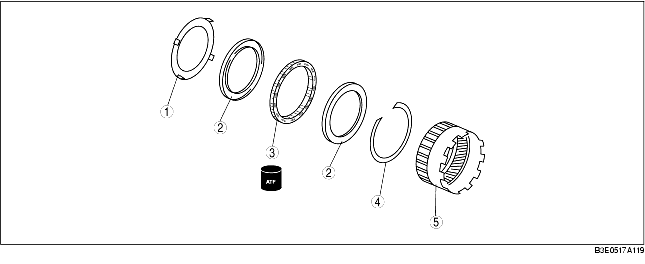

1. Voer voor het demonteren de CONTROLE VOORAF uit.
(Zie Voorste ringwiel en vrijloop.)
2. Verwijder de onderdelen in de aangegeven volgorde, zie de tabel.
3. Plaats de onderdelen in de omgekeerde volgorde.

• Verwijder de houder van de vrijloop met een schroevendraaier zoals is afgebeeld.
1. Plaats de borgveer.
2. Plaats de vrijloop in de richting van de pijl op het voorste ringwiel, zie afbeelding.
3. Plaats de zijring.
4. Plaats de houder van de vrijloop.